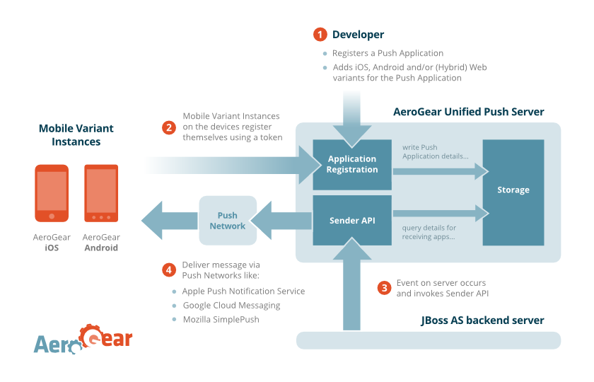

AeroGear Unified Push Server (Draft 0.0.3)
The AeroGear Unified Push Server is a server that allows sending native push messages to different mobile operation systems. The initial version of the server supports Apple’s APNs, Google Cloud Messaging and Mozilla’s Simple Push.
Motivation / Purpose
The AeroGear Native Push Server offers a Notification Service API to different backend applications. This gives a server the ability to send Push Notifications to mobile applications. The Notification Service API is a signaling mechanismn, like Apple APNs, Google Cloud Messaging or Mozilla SimplePush for sending messages. It’s not suitable to be used as a data carrying system (e.g. use in a chat application).
Some Usage Scenarios
- MyWarehouseInc-backend can send “notification messages” to different “customer” groups (e.g. discounts for only iOS (or only Android) users).
- MyInsuranceCorp-backend can send “notification messages” to different variants of its mobile Applications:
- App for the Customers
- App for the employed Sales Agents
- Publishing Company
- MyPublishing-Company-backend sends update “notification messages” to all of its apps (free and premium - regardless of the mobile OS).
- The arrival of “advanced content” is only notified to the paying customers (e.g. those that run the premium app).
- A company has different backends (small/simple apps for different tasks) - and these different backends could be able to reach all (or some) of the company’s mobile apps.
Goal: To make any (JBoss/AeroGear powered) mobile application, that is backed by JBoss technology (e.g. admin console, Errai, drools, etc.), work easily with mobile push messages. For a JBoss “backend application” it should be as simple as possible to send messages to its different mobile clients.
Definitions
Before we get into details, it’s important that we have a good lexicon.
Push Application
A logical construct that represents an overall mobile application (e.g. Mobile HR).
Mobile Variant
A mobile variant of the Push Application. There can be multiple variants for a Push Application (e.g. HR Android, HR iPad, HR iPhone free, HR iPhone premium or HR Mobile Web). A Mobile Variant contains platform specific properties, such as a Google API key (Android) or a PushNetwork URL (SimplePush).
Mobile Variant Instance
Represents an actual installation on a mobile device (e.g. User1 connected via MobileWeb or User2 runs HR iPhone premium on his phone)
(Push) Notification Message
A simple message to be send to a mobile application, to notify it of a data change.
Sender API
Is a component that sends Push Notification Messages to a Push Application or a Mobile Variants. The message is then delivered to all (valid) Mobile Variant Instance. It’s also possible to use a selected send, for notifying a selected group of users (aka Mobile Variant Instance).
Developer
A Developer is in charge of enabling Push Notifications for his different backend systems. For that he has to create a Push Application and one or more Mobile Variants on the AeroGear Unified Push Server.
A Developer will use the Sender API to send “notification messages” to different Mobile Variant Instances.
User
A user of an AeroGear Mobile Variant Instance, which may consume notification messages.
Overview
The AeroGear Unified Push Server contains three different components:
* Registration: Registry for Push Applications, Mobile Variants and Mobile Variant Instances
* Storage: A database, storing the registered applications and instances
* Sender: Receives messages and sends them to different Mobile Variant Instances
The graphic below gives a little overview:

Functionality
Registration
Three different registration types are provided by the AeroGear Unified Push Server.
Push Application Registration
Adds a logical construct, that represents an overall mobile application (e.g. Mobile HR). The Push Application contains the following properties:
- Name
- Description
- A collection of
Mobile Variants
The server offers an HTTP interfaces to apply a Push Application registration:
curl -v -H "Accept: application/json" -H "Content-type: application/json"
-X POST
-d '{"name" : "MyApp", "description" : "awesome app" }'
http://SERVER/applications
The response returns an ID for the Push Application.
Mobile Variant Registration
Adds a mobile variant for an existing Push Application. There can be multiple variants for a Push Application (e.g. HR Android, HR iPad, HR iPhone free, HR iPhone premium or HR Mobile Web).
The server supports the following variant types: * iOS * Android * SimplePush
iOS Variant
An iOS variant represents a logical construct for one iOS application (e.g. HR for iPhone or HR for iPad ). The iOS variant requires some APNs specific values:
- APNs Push Certificate file
- Passphrase
The server offers an HTTP interfaces to register an iOS variant:
curl -i -H "Accept: application/json" -H "Content-type: multipart/form-data"
-F "certificate=@/Users/matzew/Desktop/MyCert.p12"
-F "passphrase=TopSecret"
-X POST http://SERVER/applications/{PUSH_ID}/iOS
NOTE: The above is a multipart/form-data, since it is required to upload the “Apple Push certificate”!
The response returns an ID for the iOS variant.
Android Variant
An Android variant represents a logical construct for one Android application (e.g. HR for Android). The Android variant requires some Google specific values:
- Google API Key
The server offers an HTTP interfaces to register an Android variant:
curl -v -H "Accept: application/json" -H "Content-type: application/json"
-X POST
-d '{"googleKey" : "IDDASDASDSA"}'
http://SERVER/applications/{PUSH_ID}/android
_The response returns an ID for the Android variant.
SimplePush Variant
An SimplePush variant represents a logical construct for one SimplePush application (e.g. HR mobile Web). The SimplePush variant requires some Simple Push Network specific values:
- URL of the PushNetwork server
The server offers an HTTP interfaces to register an SimplePush variant:
curl -v -H "Accept: application/json" -H "Content-type: application/json"
-X POST
-d '{"pushNetworkURL" : "http://localhost:7777/endpoint/"}'
http://SERVER/applications/{PUSH_ID}/simplePush
The response returns an ID for the SimplePush variant.
Mobile Variant Instance Registration
Adds a mobile variant instance to an existing mobile variant (e.g. User1 runs HR-iPad on his device). It is possible that one user can have multiple devices. A mobile variant instance contains the following properties:
Required Data
- token
The platform specific token, that identifies the device/application with the used push network, in order to deliver messages.
- operatingSystem
It is required for the device to submit it’s exact name of the underlying OS.
- osVersion
It is required for the device to submit it’s exact version of the underlying OS.
- Mobile Variation ID
ID received when registering a Mobile Variant. This ID needs to be submitted as a request header (ag-mobile-variant). NOTE: It is possible that this ID goes away, in favor for a digital signature in a future release
Optional Data
- deviceType
It is recommended to store the (exact) device type (e.g. phone vs tablet).
- alias
If the business application requires the conecpt of a user, the registration must submit an unique identifier (like a username), to identify the user. It is possible that one user has multiple devices.
- category
A logical group, useful when sending broadcast message to a certain “category”.
Business Data
The above are technical information bits that are required to get a message to the device. This the app wants to send notification based on a criteria, the relevant data has to be stored in the business backend. This way the backend app is very flexible on the criterias (e.g. max salary, geolocation, number of children, etc). All this data is NOT directly related to the technical functionality of sending data. The usage of the AeroGear Pipe is highly recommended to store business data on the business backend.
The server offers an HTTP interfaces to register an mobile variant instance:
curl -v -H "Accept: application/json" -H "Content-type: application/json"
-H "ag-mobile-variant: {id}"
-X POST
-d '{
"alias" : "user@company.com",
"token" : "someTokenString",
"deviceType" : "ANDROID",
"mobileOperatingSystem" : "android",
"osVersion" : "4.0.1"
}'
http://SERVER/registry/device
NOTE: Platform specific Client SDKs will be provided to submit the require data to the AeroGear Unified Push Server.
Storage
A (configurable) database that stores all registered applications and instances.
Sender
HTTP interface that receives messages for a delivery to different Mobile Push Networks. A few different Sender Types are supported by the push server.
Global Broadcast Sender
Sends a push message to all mobile variants (and all of its mobile variant intances), of a given Push Application:
curl -v -H "Accept: application/json" -H "Content-type: application/json"
-X POST
-d '{"key":"blah", "alert":"HELLO!"}'
http://SERVER/sender/broadcast/{PushApplicationID}
Sends a JSON map to the server. If platform specific key words (e.g. alert for APNs) are used, they are honored for the specific platform. This transformation is done by the AeroGear Unified Push Server.
Variant specific Broadcast
Sends a push message to only one mobile variants (and all of its mobile variant intances).:
curl -v -H "Accept: application/json" -H "Content-type: application/json"
-X POST
-d '{"key":"blah", "alert":"HELLO!"}'
http://SERVER/sender/broadcast/variant/{MobileVariantID}
Sends a JSON map to the server. If platform specific key words (e.g. alert for APNs) are used, they are honored for the specific platform. This transformation is done by the AeroGear Unified Push Server.
Selected Sender
Sends a push message to a selected list of identified users (regardless of their variant):
curl -v -H "Accept: application/json" -H "Content-type: application/json"
-X POST
-d '{
alias: ["user@foo.com", "bar@moz.org", ....],
message: {"key":"blah", "alert":"HELLO!"}
}'
http://SERVER/sender/selected
The alias value is used to identied the desired users. The payload (messages) is a standard JSON map. If platform specific key words (e.g. alert for APNs) are used, they are honored for the specific platform. This transformation is done by the AeroGear Unified Push Server.
Use Cases
Below are the BASIC use-cases, that the AeroGear Unified Push Server needs to initially support.
- Enroll
Developer - Remove
Developer - Developer can register a
Push Application - Developer can add a
Mobile Variantfor different operation systems - Developer can remove a
Mobile Variant - Developer can remove
Push Application Userregisters hisMobile Variant Instance(see here).Userunregisters hisMobile Variant Instance(e.g. app got deinstalled, user deleted etc)Userreceives Push Notification Messages (handled by the native OS, once accepted to receive messages)Developersend Push Notification MessagesDevelopercan disable Push Notifications to selectedMobile Variant Instances.
Enroll
Developer
The Developer role is always registered with the AeroGear Unified Push Server and a username/password combination is required.
User
Not all mobile applications know the concept of a user (e.g. Sport Broadcast apps), but others do (e.g. Twitter). The User is never registered with the AeroGear Unified Push Server. The User lives in the Business Database. In cases where the mobile app requires a User, it is highly recommend to register an alias with the Mobile Variant Instance. See here for more details.
Remove
Developer
It should be possible to remove Devlopers from the Server.
User
It should be possible to remove a Mobile Variant Instance, so that it can no longer receive Push Notification Messages.
Register Push Applications
A Developer can register multiple Push Applications. Each Push Application has a generated AeroGear-Application-Key (ID) to identify the “server side” representation of the Push-App. Each Push Application can have several Mobile Variants.
Add Mobile Variant
A Developer can add a Mobile Variant to an existing Push Application.
Remove Push Application
A Developer** should be able to remove a Push Application (including its Mobile Variant).
Remove Mobile Variant
A Developer** should be able to remove a Mobile Variant, of an existing Push Application.
Mobile Variant Instance Registration
Once a User installs and launches the mobile application, the embedding OS generates a Device-Token (or Registration ID(Android) or ChannelID (SimplePush)). The application needs to send this token (and a few more pieces of information) to the AeroGear Unified Push Server (See here), in order to be able to receive Push Notification Messages.
Remove Mobile Variant Instance
uninstall
If an app gets uninstalled, the phone is no longer able to receive push messages. Therefore inactive Mobile Variant Instance should be removed, on the server. However… there is no harm if invalid keys are used, on the server, when trying to send push messages…
access removed
Admin can disable push notifications for a specific Mobile Variant Instance.
Receives Push Notification Messages
Every installed app, is able to receive Push Notification Messages through the APIs, offered by the platforms (iOS, Android, SimplePush).
Note: On iOS the user as to agree to receive push messages
Sending Push Notification Messages
Broadcast
The AeroGear Unified Push Server acts as a broker to deliver Push Notification Messages to several Mobile Variant Instances. A developer can send Push Notification Messages to a specific Push Application or Mobile Variant.
Filtered/Selected messaging
Sending message to a specific Mobile Variant Instances…. We need a DSL to filter users etc…. This will be done later…
In-APP messaging
Later, there will be an option to have the app (via client SDK) also submit Push Notification Messages, to broadcast to other Mobile Variant Instances of the app (or to a specific Mobile Variant Instances). This will be done later…
API access
Initial focus is that the above functionality is ONLY accessable via RESTful/HTTP APIs!
For interaction with the API endpoints (for app registration and sending) we need a proper sec/auth model/workflow. Perhaps something like OAuth…:

(Image from Google’s developer network)
NOTE: The User in the image is a DEVELOPER in our wordings…
Device/Installation Registration
TO DISCUSS
Client SDK / API
An abstract client spec is in the works.
Later we will have a few more SDKs: * Client APIs (for Android, iOS, JS/SimplePush) * Server APIs (send a push message out of your JavaEE app, without submitting (manually) the HTTP calls)